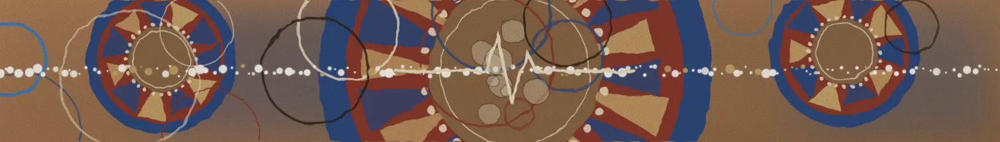

Análises

Um quadro geral da saúde
Em 2022 morreram 1.507.077 pessoas no Brasil. Todas deixaram um registro com a causa, a idade, o município e a data — e é possível perguntar a esse registro duas coisas de cada doença do país: quantos ela mata e quantos ela interna. A razão entre as duas é uma radiografia do que o sistema de saúde consegue fazer.
Começa pelo câncer, que é 15,4% dessas mortes, e termina em todo o resto.
226.762 dessas mortes foram por câncer — uma em cada sete. No mesmo ano, os hospitais públicos registraram 707.675 internações por tumor: pouco mais de três internações para cada morte.
A média, como sempre, esconde o que interessa. Porque existe um câncer no Brasil que quebra essa proporção de um jeito assustador: ele mata mais gente do que interna.

Como se lê este gráfico
Cada bolha é um tipo de câncer, posicionado por duas coisas que aconteceram no mesmo ano: quanto ele matou (eixo horizontal) e quanto ele internou no SUS (eixo vertical), sempre por 100 mil habitantes. O tamanho da bolha é o número absoluto de mortes.
A diagonal de baixo é a linha da paridade: uma internação para cada morte. Quanto mais alto um câncer flutua acima dela, mais o sistema de saúde consegue fazer alguma coisa por quem tem aquele tumor. Quem encosta na diagonal está no território dos tumores que quase não dão tempo de tratar.
E há um único ponto abaixo dela.
O pulmão, ou o câncer que não chega ao hospital
28.166 mortes. 26.892 internações. Razão: 0,95.
Câncer de traqueia, brônquios e pulmão é o que mais mata no Brasil, e é o único da lista que interna menos do que mata. Não é um detalhe estatístico — é a descrição clínica da doença traduzida em contagem.
O pulmão não dói. Não tem terminações nervosas sensíveis à dor no tecido pulmonar profundo, e um tumor pode crescer por meses sem produzir nada além de uma tosse que o paciente atribui ao cigarro, ao tempo seco, à idade. Quando aparecem os sintomas que assustam — sangue no escarro, falta de ar, dor no peito, perda de peso —, o tumor em geral já saiu do lugar de origem. A maioria dos diagnósticos no Brasil acontece em estágio avançado, quando a cirurgia curativa está fora de questão.
Some-se a isso o fato de que não existe no SUS um programa nacional de rastreamento de câncer de pulmão. Câncer de mama tem mamografia. Colo do útero tem preventivo. Pulmão não tem nada equivalente em escala nacional — a tomografia de baixa dose para fumantes pesados, adotada em alguns países, ainda não virou política pública aqui.
O resultado é que uma parte dessas 28 mil pessoas morre sem nunca ter ocupado um leito por causa do tumor: em casa, em cuidado paliativo, em quimioterapia ambulatorial. Não há internação porque não há muito o que fazer no hospital.
A vizinhança da diagonal: pâncreas, fígado, vesícula
Logo acima do pulmão vêm os três tumores que compartilham a mesma lógica cruel.
Pâncreas (1,35 internação por morte). O pâncreas fica atrás do estômago, no fundo do abdome, encaixado entre grandes vasos. Um tumor ali cresce sem tocar em nada que produza sintoma. Quando produz, costuma ser icterícia indolor — a pele amarela sem que doa nada —, emagrecimento e uma dor nas costas que passa por problema de coluna. Só uma minoria dos casos chega ao diagnóstico ainda operável.
Fígado (1,12). Aqui a história é outra: o câncer primário de fígado quase sempre nasce num fígado já doente, cirrótico por hepatite B, hepatite C, álcool ou, cada vez mais, por gordura hepática associada à síndrome metabólica. O paciente chega ao oncologista já com uma reserva funcional comprometida — e muito do que a oncologia oferece exige um fígado que funcione para metabolizar.
Vesícula e vias biliares (1,70). Boa parte é achado de acaso: o cirurgião retira a vesícula por causa de pedras, manda o material para análise e o laboratório encontra um carcinoma. Quando dá sintoma antes disso, já é tarde.
O padrão é o mesmo nos três: órgão profundo, sintoma tardio, ausência de exame de rastreamento viável para a população geral.
O outro extremo: internar muito é boa notícia
Sobe-se o gráfico e a lógica se inverte.
Mama (4,31). 18.383 mortes contra 79.249 internações — a maior barra vertical do gráfico. Câncer de mama é palpável, visível, mamografável. O SUS oferece rastreamento bienal na faixa de 50 a 69 anos, e a doença tem um arsenal terapêutico enorme: cirurgia conservadora ou mastectomia, reconstrução, quimioterapia, hormonioterapia, terapia-alvo. Cada uma dessas etapas gera internação. A bolha alta significa que existe caminho.
Cólon (4,54) e reto/ânus (4,75). Tumores de intestino grosso são, em boa medida, curáveis por cirurgia quando pegos cedo — e a cirurgia sempre interna. É também a dupla que mais cresce no país, empurrada por dieta, sedentarismo e obesidade, e a que mais se beneficiaria de um rastreamento organizado por exame de sangue oculto nas fezes e colonoscopia, que o SUS ainda não oferece de forma sistemática.
Leucemia (5,96). Aqui é preciso ler com cuidado: leucemias agudas são tratadas com ciclos de quimioterapia que exigem internação, muitas vezes semanas seguidas, e o mesmo paciente pode voltar ao hospital cinco, seis vezes no ano. O eixo vertical conta episódios, não pessoas. A razão alta reflete a intensidade do tratamento tanto quanto a sobrevida.
O paradoxo da tireoide
808 mortes. 12.315 internações. Razão: 15,15.
Câncer de tireoide praticamente não mata — e enche hospital. Não porque seja um triunfo da medicina, mas por um fenômeno com nome próprio na literatura médica: sobrediagnóstico.
Ultrassom de pescoço é barato e disponível, e encontra nódulos milimétricos em uma parcela enorme da população adulta. Muitos desses nódulos, biopsiados, revelam carcinoma papilífero — um tumor que, na maioria dos casos, jamais causaria sintoma ou morte se ninguém o tivesse procurado. Achado o câncer, opera-se a tireoide. E operação é internação.
O caso mais estudado é o da Coreia do Sul, onde a incidência de câncer de tireoide multiplicou-se por mais de dez em duas décadas de rastreamento intensivo por ultrassom sem que a mortalidade se movesse. Não houve epidemia de câncer. Houve epidemia de exame.
O mesmo raciocínio vale para o câncer de pele não melanoma (17,50), campeão absoluto da razão: é o tumor mais comum do país, resolvido quase sempre com uma excisão, e responsável por uma fatia mínima das mortes.
O câncer que não deveria estar neste gráfico
Colo do útero: 6.601 mortes.
É o único tumor da lista com causa única, conhecida e vacinável: o HPV. Existe vacina, que o SUS oferece de graça a meninas e meninos. Existe exame de rastreamento barato, o preventivo, que detecta a lesão antes de virar câncer. Existe tratamento simples para a lesão pré-cancerosa.
E ainda assim seis mil e seiscentas brasileiras morreram disso em 2022 — mais do que morreram de leucemia. A mortalidade por colo do útero não é um problema de biologia do tumor; é um mapa de quem não teve acesso a um exame que custa quase nada. Concentra-se onde a cobertura de atenção básica é mais frágil.
De onde vêm essas mortes
Passando o olho na lista inteira, a maioria dos tumores mais letais do país tem causa externa identificada — e em boa parte evitável:
- Tabaco — pulmão, laringe, faringe, esôfago, boca, bexiga, rim, pâncreas. É o fator de risco isolado que mais se repete na lista. O Brasil derrubou o consumo de cigarro de forma drástica desde os anos 1980, mas o câncer de pulmão tem latência de duas a três décadas: as mortes de hoje refletem o cigarro de ontem, e a queda ainda está por vir.
- Álcool — boca, faringe, laringe, esôfago, fígado, mama e intestino. Combinado com tabaco, o risco não soma: multiplica.
- Infecções — HPV no colo do útero e na orofaringe; Helicobacter pylori no estômago; hepatites B e C no fígado. Cerca de um em cada seis cânceres no mundo tem origem infecciosa, e a fatia é maior em países de renda média.
- Obesidade e sedentarismo — cólon, reto, corpo do útero, rim, pâncreas, mama após a menopausa. É o fator de risco que mais cresce, e o único da lista que está piorando no Brasil.
- Bebida muito quente — esôfago. A associação com o consumo de chimarrão e chá em temperatura elevada ajuda a explicar a força desse tumor no Sul do país.
Em que idade cada câncer mata
O mesmo registro de óbitos traz a idade de cada morte — e ela separa os tumores de um jeito ainda mais brutal do que a razão de internações.

Do câncer de testículo se morre aos 33 anos. Do de próstata, aos 78. Quarenta e cinco anos separam as duas pontas da lista. E só três tumores têm mediana antes dos 60: testículo (33), linfoma de Hodgkin (53) e colo do útero (55).
A razão é a própria mecânica da doença. Câncer é um acidente de cópia: a cada divisão celular existe uma chance pequena de erro no DNA, e é preciso acumular vários erros nos genes certos para que uma célula escape do controle. Isso leva tempo — décadas. Some-se o tempo de exposição aos carcinógenos, que também é cumulativo: o maço de cigarro de hoje não cobra a conta amanhã, cobra em 2050. Por isso os carcinomas, os tumores que nascem do tecido de revestimento dos órgãos, são esmagadoramente doença de velho: pulmão, próstata, estômago, cólon, bexiga, pele.
Os que fogem da regra fogem por motivos precisos:
- Testículo nasce de células germinativas, que são resquício embrionário e entram em atividade na puberdade. Não precisa de décadas de mutação acumulada — o pico de mortes está entre 25 e 29 anos. É também um dos cânceres mais curáveis que existem, o que explica as 446 mortes contra 3.698 internações.
- Leucemias e tumores do sistema nervoso central são os dois grandes cânceres da infância: atingem células que ainda estão se multiplicando muito rápido no corpo em formação.
- Colo do útero é cronometrado pelo HPV. A infecção acontece no início da vida sexual, a lesão leva de dez a vinte anos para virar câncer invasivo, e a morte chega na faixa dos 50. Não é uma doença de envelhecimento — é uma doença de tempo decorrido desde a infecção.

O mapa de calor mostra o formato, não só a posição. Leucemia é o tumor que mais mata jovem: 14,3% das suas mortes acontecem antes dos 25 anos, contra 0,2% no câncer de pulmão e 0,1% no de mama. Testículo é o oposto de tudo — a mancha some depois dos 45. E próstata, bexiga e pele não melanoma praticamente não existem antes dos 60.
Próstata e mama: um empate escondido pela idade
Reparou que a mama aparece mais à direita que a próstata no gráfico — ou seja, matando mais? É verdade em números brutos, e é um bom exemplo de como a idade distorce comparações.
| Mortes | Taxa bruta /100 mil | Taxa padronizada por idade /100 mil | |
|---|---|---|---|
| Mama | 18.383 | 17,24 | 12,88 |
| Próstata | 15.382 | 15,53 | 12,88 |
Padronizadas pela População Padrão Mundial da OMS — o método que neutraliza a estrutura etária —, as duas empatam. A explicação está em quando cada uma mata: 62,7% das mortes por próstata acontecem dos 75 anos em diante (25,5% só na faixa de 85+), contra 24,4% no câncer de mama, que mata espalhado a partir dos 50. Como há muito mais brasileiro de 50 a 70 anos do que de 85+, a taxa bruta favorece a mama.
Isso também explica a fama do câncer de próstata como "câncer bonzinho". Boa parte dos tumores detectados por PSA cresce tão devagar que o homem morre com o tumor, não por causa dele. Que é exatamente o mesmo mecanismo de sobrediagnóstico da tireoide, com outro nome.
Um aviso sobre as idades extremas
Os traços finos do gráfico de amplitude — a idade do óbito mais novo e do mais velho de cada tumor — pedem cautela, por duas razões.
A primeira é que o registro de idade do SIM tem lixo. Em 2022, 6.528 óbitos (0,44% do total) saem com idade impossível — de 116 até 220 anos. Não são supercentenários: a distribuição desses registros tem exatamente o formato de uma curva de mortalidade deslocada, o que denuncia erro sistemático na codificação do campo, e não idade real. Sem descartá-los, o câncer de próstata apareceria matando aos 201 anos, e o de lábio aos 212. Tudo acima de 115 anos ficou de fora daqui.
A segunda é que, mesmo depois da limpeza, mínima e máxima são registros isolados — uma pessoa cada. Algumas continuam clinicamente improváveis, como a morte por câncer de próstata registrada com 1 ano de idade. A leitura confiável é a barra grossa dos gráficos, onde estão 80% das mortes; os extremos dizem só até onde o registro foi, não até onde a doença vai.
O que este gráfico não enxerga
Vale explicitar as fronteiras do dado, porque elas mudam a leitura:
- A mortalidade cobre todo mundo; a internação, não. O registro de óbitos abrange o país inteiro, saúde pública e privada. As internações contadas aqui são exclusivamente do SUS. Para tumores mais frequentes entre quem tem plano de saúde, o eixo vertical está subestimado.
- Internação é episódio, não paciente. Quem interna quatro vezes no ano aparece quatro vezes — o que empurra para cima os tumores de tratamento longo, como as leucemias.
- Quimioterapia e radioterapia ambulatoriais ficam de fora. São registradas por outro instrumento, fora da internação. Uma parte grande do tratamento oncológico acontece sem ninguém dormir no hospital, e não está no eixo vertical.
- Não é incidência. O gráfico clássico deste formato cruza incidência com mortalidade — e não dá para reproduzi-lo com dado brasileiro, porque o país não tem registro nacional de câncer de base populacional. Internação é o que existe em cobertura nacional no mesmo ano. É um retrato do que o sistema de saúde faz, não de quantos adoecem.
- As taxas do gráfico são brutas. Comparam-se entre si, porque todos os tumores dividem pela mesma população no mesmo ano — mas não se comparam com séries internacionais padronizadas por idade. Sítios exclusivos de um sexo usam como denominador a população daquele sexo.
- Tumores de sítio mal definido ou secundário ficam de fora. São os códigos que registram metástase sem nomear o órgão de origem, e por isso não cabem numa lista organizada por sítio.
- As idades descrevem um conjunto ligeiramente menor que as mortes. São calculadas só sobre os óbitos com idade válida: de fora ficam os 2,4% sem idade preenchida e os 0,44% com idade impossível.
E quando não é câncer
Câncer é 15,4% das mortes do Brasil. As outras 1.275.091 de 2022 nunca passaram por este recorte — e o mesmo registro de óbitos que produziu tudo acima descreve cada uma delas com a mesma precisão. Vale aplicar as três leituras ao resto.

Quatorze causas isoladas matam mais do que o câncer de pulmão, o tumor mais letal do país. Infarto agudo do miocárdio mata 92.815 pessoas por ano — três vezes o pulmão, e mais do que os cinco piores tumores somados. Depois vêm pneumonia (88.101), diabetes (70.034), COVID-19 (63.788) e doença hipertensiva (61.902).
Duas notas sobre a lista. A primeira: COVID-19 não aparece no código U07 em 2022 — o sistema brasileiro registrou a doença em B34.2, no capítulo das infecciosas, e quem procurar pelo código internacional não acha nada. A segunda: Alzheimer está partido em dois capítulos da classificação (as demências vasculares e senis vão para o capítulo dos transtornos mentais, a doença de Alzheimer para o do sistema nervoso). Somadas, são 35.704 mortes — a décima causa do país, e a que mais cresce: eram 14.390 em 2010, um aumento de 148% em doze anos. No mesmo período o homicídio caiu 26% e o infarto subiu 16%.
O grupo abaixo da linha

No gráfico do câncer havia um único ponto abaixo da paridade. Fora do câncer são seis — e eles não estão ali por acaso:
| Internações por morte | |
|---|---|
| Doença de Chagas | 0,16 |
| Parkinson | 0,26 |
| Alzheimer e demências | 0,48 |
| Pneumonite por aspiração | 0,48 |
| Sequelas e outras doenças cerebrovasculares | 0,67 |
| Doença hipertensiva | 0,97 |
O padrão é diferente do câncer de pulmão. Lá, a razão baixa vinha do diagnóstico tardio: o tumor não dava tempo. Aqui vem do contrário — dá tempo demais, e o hospital não é o lugar. São doenças crônicas e degenerativas para as quais não existe cirurgia, não existe ciclo de tratamento, não existe alta. O paciente com Alzheimer avançado morre em casa ou numa instituição de longa permanência; internar não muda o desfecho e expõe a infecção. Parkinson tem 5.310 mortes e 1.386 internações no ano inteiro do país: quase quatro mortes para cada internação. Chagas, doença de quem foi picado décadas atrás e envelheceu com o coração comprometido, tem 604 internações para 3.699 mortes.
A pneumonite por aspiração no meio dessa lista é reveladora: ela é, quase sempre, a complicação final de quem já tem demência ou sequela de AVC — engasgo, aspiração, pneumonia. É o mesmo grupo de pacientes, contado por outro código.
No extremo oposto estão as urgências cirúrgicas e as crises reversíveis: apendicite, hérnia e obstrução internam 47 vezes mais do que matam; asma, 32; diarreia e gastroenterite, 30. Toda vez que existe um procedimento que resolve, a bolha sobe.
A idade, de 0 a 86

O câncer inteiro cabia entre a mediana de 33 anos do testículo e a de 78 da próstata — 45 anos de amplitude, que já pareciam muitos. Fora dele a amplitude é o dobro:
- Afecções perinatais e malformações congênitas: mediana 0. Morrem no primeiro dia.
- Homicídio: 30 anos. Um terço das 38.874 mortes acontece antes dos 25. Só de arma de fogo são 23.626, com mediana de 28 — mais jovem que qualquer câncer, inclusive o de testículo.
- Morte materna: 30 anos, e concentrada como nenhuma outra: 80% entre 20 e 40.
- Trânsito e suicídio: 40 anos cada um.
- AIDS: 44. Transtornos por álcool: 55. Cirrose: 60. Este é o bloco que mais diz alguma coisa — doenças que não esperam a idade chegar porque não dependem dela. Dependem de exposição, de acesso e de quem a pessoa é.
- Infarto: 70. Diabetes: 73. Pneumonia: 80. O miolo da mortalidade brasileira.
- Infecção urinária: 83. Alzheimer: 86. O fim da fila.
O mapa também mostra uma coisa que a mediana esconde: a diarreia tem duas idades. Mata bebê e mata idoso, com um vale de cinquenta anos no meio — a mesma forma bimodal que a leucemia tinha no gráfico do câncer, por motivo inteiramente diferente. Desnutrição tem o mesmo desenho.
O que não entra em nenhum dos três gráficos
- 91.888 mortes por sintomas e achados mal definidos. É a sexta maior "causa" do país e não nomeia doença nenhuma — em 57.776 delas o registro diz apenas "outras causas mal definidas e não especificadas". Onde a rede de atenção é mais frágil, essa fatia cresce.
- Causas externas entram no gráfico de internação como um bloco só. O registro de óbito guarda a causa (agressão, queda, acidente); o registro hospitalar guarda a lesão (fratura, ferimento). O campo que ligaria os dois está vazio em 2022, então dá para comparar os totais — 141.944 mortes contra 1.353.446 internações por lesão — mas não dá para separar quanto disso é violência e quanto é acidente.
- Gravidez, parto e puerpério ficou fora do gráfico de internação. As 2,2 milhões de internações do capítulo são quase todas partos normais, não tratamento de doença.
- As três figuras cobrem 77,4% das mortes não-câncer. O resto está em códigos residuais de cada capítulo, doenças raras demais para nomear, e nas mal definidas acima.
Fontes: Ministério da Saúde — Sistema de Informações sobre Mortalidade (óbitos de 2022 por causa básica) e Sistema de Informações Hospitalares (internações de 2022 por diagnóstico principal). População: IBGE, Censo 2022. As taxas padronizadas por idade usam a População Padrão Mundial da OMS. Além dos óbitos sem idade preenchida (2,4%) e dos 0,44% com idade impossível, a seção final descarta 1.006 registros com idade negativa. O texto clínico é contexto médico geral, não recomendação de conduta: rastreamento e tratamento se discutem com médico.